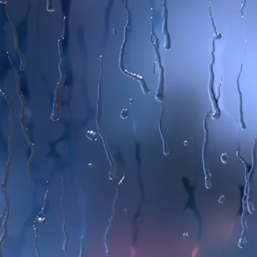
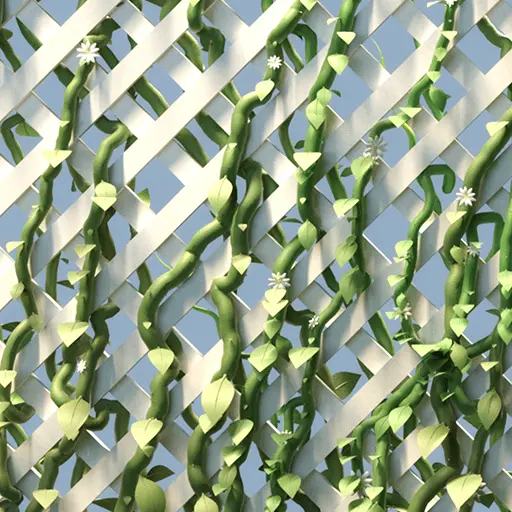
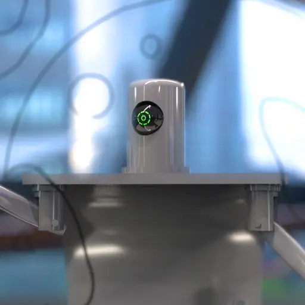
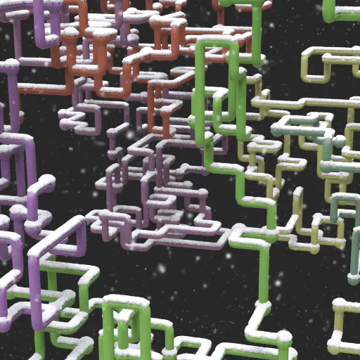
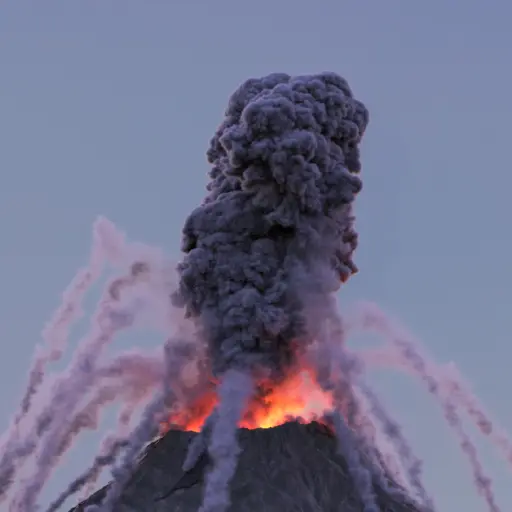
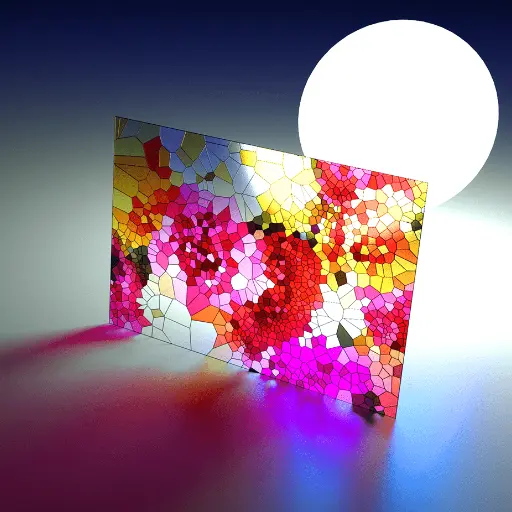
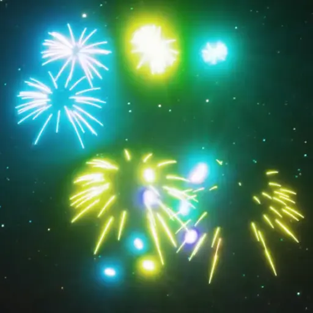
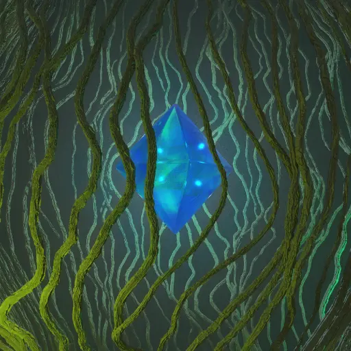

Droplets Tool
SOP-based tool without fluid simulation that dynamically creates droplet geometry and a wetmap texture on any geometry surface.
Procedural Assets & Simulation Pipelines
Procedural geometry generation, particle dynamics, and simulation pipelines created with SideFX Houdini. Building procedural assets, custom digital assets (HDAs), and automated graphics pipelines for real-time graphics and offline rendered sequences.

SOP-based tool without fluid simulation that dynamically creates droplet geometry and a wetmap texture on any geometry surface.

An HDA for procedurally growing vines on any input geometry, that grow based on parameters such as light orientation and surface attraction.

A virtual robot that procedurally draws 2D images of 3D meshes, and sometimes gets abstract.

A procedural animation project recreating the classic Microsoft "Pipe Dream" screensaver using VEX and Python.

A volcanic eruption animation using pyro and fluid simulation, and a custom lightning tool created with VEX.

An HDA that created stained glass geometry from image inputs.

A Python/VEX based tool to interactively create animated fireworks.

A gallery of smaller projects and older work largely created with Houdini.
View Gallery >